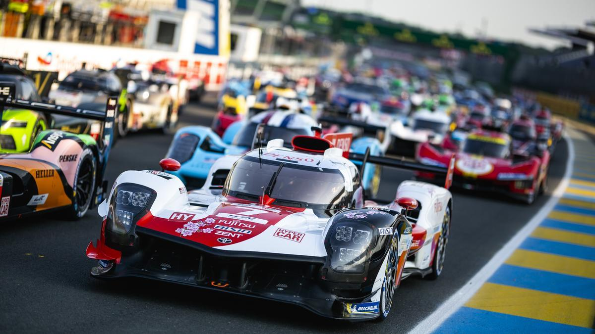
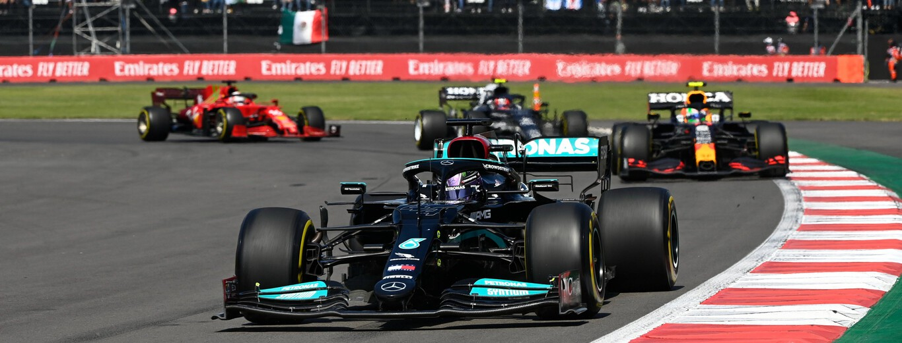
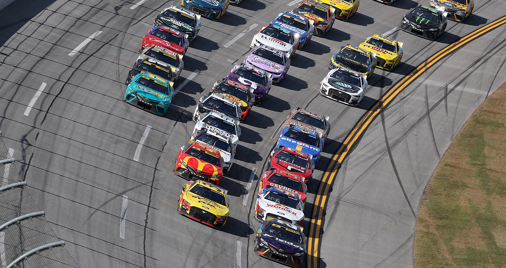
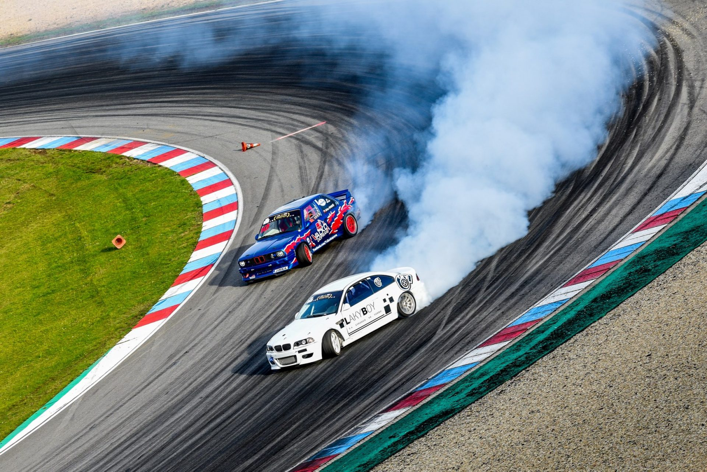

Competencias

24 Horas de Le Mans
Ubicación: Le Mans
Francia Primera edición: 1923
Avances: Esta es una de las competencias de resistencia más antiguas e
importantes del mundo. Las 24 Horas de Le Mans impulsaron innovaciones
en durabilidad, aerodinámica y eficiencia de combustible, lo que condujo
a la creación de vehículos que soportan largas distancias y altas
velocidades sin comprometer el rendimiento.
Fórmula 1 (F1)
Ubicación: Mundial (Gran Premio en diferentes países)
Primera edición: 1950
Avances: La F1 es el pináculo del automovilismo y la velocidad. Ha
impulsado innovaciones como el diseño de aerodinámica avanzada,
neumáticos de alto rendimiento y la tecnología híbrida actual. Muchas de
estas tecnologías han migrado a vehículos comerciales, mejorando la
seguridad y la eficiencia.


Rally Mundial (WRC)
Ubicación: Mundial
Primera edición: 1973
Avances: Las competiciones de rally requieren vehículos versátiles
capaces de soportar diferentes climas y condiciones. Esto ha impulsado
mejoras en la tracción y la estabilidad, tecnologías que luego se
aplican a vehículos de uso diario para una conducción más segura en
diversas condiciones.
Drift
Ubicación: Mundial (especialmente popular en Japón y EE. UU.)
Popularización: Años 1990
Avances: El drift ha influido en la mejora de sistemas de suspensión,
control de tracción y maniobrabilidad en curvas cerradas. Aunque se
centra en el estilo y el control, esta disciplina ha impulsado el
desarrollo de tecnologías para el control de derrape y estabilidad en
vehículos deportivos de consumo.


Rally Mundial (WRC)
Ubicación: Mundial
Primera edición: 1973
Avances:
Las competiciones de rally requieren vehículos versátiles capaces de
soportar diferentes climas y condiciones. Esto ha impulsado mejoras en
la tracción y la estabilidad, tecnologías que luego se aplican a
vehículos de uso diario para una conducción más segura en diversas
condiciones.